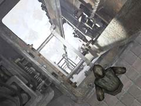

| 概要 | 地図 |
| 淡いヒント集 | ヒント集 | 的確なヒント集 |
| 攻略最短ルート |
| 場所選択に戻る |
ロマンスバーグ(前半)
町のはずれへ移動する 橋のたもとにある白布が入った装置を調べる 右上に「コイン」を入れ、レバーを引く 「白布」を入手 機関車に戻り、ハンスに対し「白布」を使う 「ハンスの白布」入手  修道院へ行き、レバーを引く (何も起こらない)  奥へ移動し、池で洗濯をしている修道士に話しかける (「ミッション」、「修道院」、「ラテン語」の選択肢が消えるまで会話) (「ハンス」を選択し、メモ帳に「鳥」が追加される) (「鳥」を選択) エミリオフ大佐に会い、話しかける (「ミッション」か何かで三色のバードコール入手) 池にいる修道士に「銀のバードコール」を渡す (修道士がどこかへ移動)  岩の上にある修道服をクリック (ケイトが着替える) 修道院のレバーを引く (エレベーターが下りてくる)
| << 前へ |
|
| 場所選択に戻る |
| 概要 | 地図 |
| 淡いヒント集 | ヒント集 | 的確なヒント集 |
| 攻略最短ルート |
Syberia II
| 目次へ戻る | ページの上部へ |